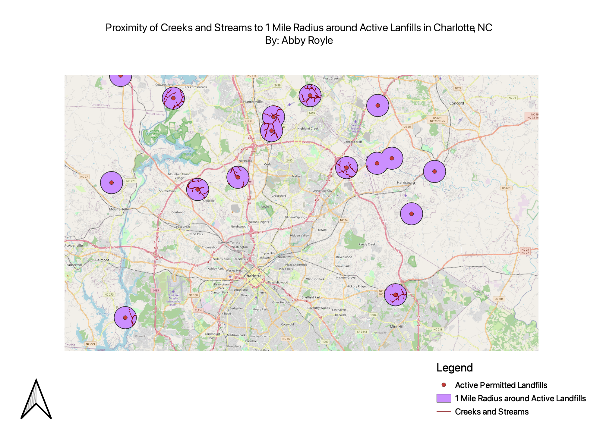

Homework 8
Abby Royle
This map depicts the intersection between creeks and streams in the Charlotte area and the 1 mile radius around active landfills.
I chose this to answer the question: Are landfills located in proximity to creeks and streams despite the risk of contamination/pollution?
I utilized the geoprocessing tools of buffers (around the landfills), dissolve (to show areas where more than one landfill is present in the 1 mile radius),
and intersection (to best display if creeks and streams are located in this radius). This map displays how some creeks and streams are located near landfills and
are at risk of contamination.

Data used for this project
Creeks and Streams Shapefile data courtesy of http://maps.co.mecklenburg.nc.us/openmapping/data.html
Landfill shapefile data courtesy of https://data-ncdenr.opendata.arcgis.com/search?tags=Regulatory
<